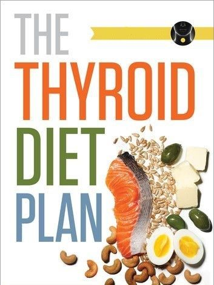

25 Simple Tips to Make Your Diet Healthier
 SubscribeNutrition
Evidence Based25 Simple Tips to Make Your Diet Healthier
Written by Adda Bjarnadottir, MS, RDN (Ice) — Updated on November 6, 2017A healthy diet has been scientifically proven to provide numerous health benefits, such as reducing your risk of several chronic diseases and keeping your body healthy.
However, making major changes to your diet can sometimes seem very overwhelming.
Instead of making big changes, it may be better to start with a few smaller ones.
This article discusses 25 small changes that can make a regular diet a little bit healthier.
1. Slow Down
Share on PinterestThe pace at which you eat influences how much you eat, as well as how likely you are to gain weight.
In fact, studies comparing different eating speeds show that fast eaters are up to 115% more likely to be obese than slow eaters ( 1 , 2 , 3 ).
Your appetite, how much you eat and how full you get is all controlled by hormones. These hormones signal your brain whether you’re hungry or full.
However, it takes about 20 minutes for your brain to receive these messages, so eating more slowly would give your brain the time it needs to perceive that you are full.
Studies have confirmed this, showing that eating slowly may reduce the number of calories you consume at meals and help you lose weight ( 4 , 5 ).
Eating slowly is also linked to more thorough chewing, which has also been linked to better weight maintenance ( 6 , 7 ).
Therefore, simply by eating slower and chewing more often, you can reduce your risk of eating too much and gaining excess weight.
2. Choose Whole-Grain Bread — Not Refined
You can easily make your diet a bit healthier by choosing whole grain bread in place of traditional refined-grain bread.
As opposed to refined grains, which have been linked to many health issues, whole grains have been linked to a variety of health benefits, including a reduced risk of type 2 diabetes, heart disease and cancer ( 8 , 9 , 10 , 11 ).
They are also a good source of fiber, B vitamins and several minerals, such as zinc, iron, magnesium and manganese.
There are many varieties of whole-grain bread available, and many of them even taste better than refined bread.
Just make sure to read the label to ensure that your bread is made with whole grains only, not a mixture of whole and refined grains. It’s also preferable that the bread contains whole seeds or grains.
3. Add Greek Yogurt to Your Diet
Greek yogurt (or Greek-style yogurt) is thicker and creamier than regular yogurt.
It has been strained to remove its excess whey, which is the watery part of milk. The end result is a yogurt that is higher in fat and protein than regular yogurt.
In fact, it contains up to three times the amount of protein found in the same amount of regular yogurt, or up to 9 grams per 100 grams ( 12 , 13 ).
Eating a good source of protein helps you feel fuller for longer, helping you manage your appetite and eat fewer calories overall ( 14 , 15 ).
Furthermore, since Greek yogurt has been strained, it contains fewer carbs and lactose than regular yogurt, making it suitable for those who follow a low-carb diet or are lactose intolerant.
Simply replace some snacks or regular yogurt varieties with Greek yogurt for a hefty dose of protein and nutrients.
Just make sure to pick the non-flavored varieties, as flavored ones may be packed with added sugar and other unhealthy ingredients.
4. Don’t Shop Without a List
There are two important strategies to employ when you go grocery shopping: make your shopping list ahead of time and don’t go to the store hungry.
Not knowing exactly what you need makes room for impulse buying, while hunger can further exacerbate your impulses.
To make sure you don’t give in to your impulses, plan ahead and write down what you need beforehand.
By doing this and sticking to your list, you will not only buy healthier items but also save money and have healthier foods around the house.
5. Eat Eggs, Preferably for Breakfast
Eggs are incredibly healthy , especially if you eat them in the morning.
They are rich in high-quality protein and many essential nutrients that people often don’t get enough of, such as choline.
When looking at studies comparing various types of calorie-matched breakfasts, eggs come out on top.
Eating eggs in the morning increases feelings of fullness. This has been shown to cause people to consume fewer calories over the next 36 hours, which can be quite helpful for weight loss ( 16 , 17 , 18 ).
One study in healthy and fit young men showed that eggs caused significantly more fullness, less hunger and a lower desire to eat, compared to a breakfast consisting of cereal or croissants ( 19 ).
In fact, the men who had eggs for breakfast automatically ate 270–470 fewer calories at lunch and dinner buffets, compared to those who ate other breakfasts.
Therefore, simply replacing your current breakfast with eggs may result in major benefits for your health.
6. Increase Your Protein Intake
Protein is often referred to as the king of nutrients, and it does seem to have some superpowers.
Due to its ability to affect your hunger and satiety hormones, it’s the most filling of the macronutrients ( 20 , 21 ).
One study showed that simply increasing protein intake from 15% to 30% of calories made people eat 441 fewer calories per day, without actively restricting their intake ( 22 ).
What’s more, protein helps you retain muscle mass, which determines the rate of your metabolism. A high protein intake may increase the number of calories you burn by 80–100 per day ( 23 , 24 ).
This is especially important for preventing the loss of muscle mass that can occur during weight loss and as you age ( 25 , 26 ).
Aim to add a source of protein to each meal and snack. It will help you feel fuller for longer, curb cravings and make you less likely to overeat.
Good sources of protein include dairy products, nuts, peanut butter, eggs, beans and lean meat.
7. Drink Enough Water
Drinking enough water is important for your health.
Many studies have shown that drinking water may benefit weight loss , weight maintenance and even slightly increase the number of calories you burn daily ( 27 , 28 , 29 ).
Studies also show that drinking water before meals can reduce appetite and calorie intake during the subsequent meal in middle-aged and older adults ( 28 , 30 ).
That said, the most important thing is to drink water instead of other beverages. This may drastically reduce your sugar and calorie intake ( 31 , 32 , 33 ).
People who drink mostly water have been shown to consume 200 fewer calories per day, on average, than those who drink other beverages ( 34 , 35 ).
8. Bake or Roast Instead of Grilling or Frying
The way you prepare your food can drastically change its effects on your health.
Grilling, broiling, frying and deep-frying are all popular methods of preparing meat and fish.
However, during these types of cooking methods, several potentially toxic compounds are formed, such as polycyclic aromatic hydrocarbons (PAHs), advanced glycation end products (AGEs) and heterocyclic amines (HCAs) ( 36 ).
All of these compounds have been linked to several diseases, including cancer and heart disease ( 37 , 38 , 39 , 40 ).
Healthier cooking methods include baking, broiling, simmering, slow-cooking, poaching, pressure cooking, stewing and sous-vide.
These methods do not promote the formation of these harmful compounds and thus make your food healthier ( 41 , 42 , 43 , 44 ).
Nevertheless, there is nothing to say you can’t enjoy the occasional grill or deep-fry, but try to use those methods sparingly.
9. Take Omega-3 and Vitamin D Supplements
A surprising number of people around the world are deficient in vitamin D , including 42% of the US population ( 45 , 46 ).
Vitamin D is a fat-soluble vitamin that is very important for bone health and the proper function of your immune system. In fact, every cell in your body has a receptor for vitamin D, indicating its importance ( 47 , 48 , 49 ).
Vitamin D is found in very few foods, but fatty seafood generally contains the highest amounts.
Omega-3 fatty acids are another commonly lacking nutrient found in fatty seafood. They have many important roles in the body, including reducing inflammation, maintaining heart health and promoting brain function ( 50 , 51 , 52 , 53 ).
The Western diet is generally very high in omega-6 fatty acids, which promote inflammation and have been linked to many chronic diseases ( 54 ).
Omega-3s help fight this inflammation and keep the body in a more balanced state ( 55 ).
If you don’t eat fatty seafood regularly, you should consider taking a supplement . Omega-3s and vitamin D can often be found together in a supplement.
10. Replace Your Favorite “Fast Food” Restaurant
Eating out does not have to involve unhealthy foods.
Consider “upgrading” your favorite fast food restaurant to one with healthier options.
There are many healthy fast food restaurants and fusion kitchens offering delicious and healthy meals.
They may just be a great replacement for your favorite burger or pizza joint. What’s more, you can generally get these meals at a very decent price.
11. Try at Least One New Healthy Recipe Per Week
Deciding what to have for dinner can be a constant cause of frustration, which is why many people tend to use the same recipes again and again.
Chances are you’ve been cooking the same recipes on autopilot for years.
Whether these are healthy or unhealthy recipes, it’s always healthy to try something new.
Aim to try making a new healthy recipe at least once per week. This can change up your food and nutrient intakes and hopefully add new and healthy recipes to your routine.
Alternatively, try to make a healthier version of a favorite recipe.
12. Choose Baked Potatoes Over French Fries
Potatoes are very filling and a common side to many dishes ( 56 ).
That said, the method in which they’re prepared largely determines their health effects.
For starters, 100 grams of baked potatoes contain 94 calories, while the same amount of french fries contains over three times as many, or 319 calories ( 57 , 58 ).
Furthermore, deep-fried french fries generally contain harmful compounds, such as aldehydes and trans fats ( 59 , 60 ).
Replacing your french fries with baked or boiled potatoes is a great way to shave off calories and avoid these harmful compounds.
13. Eat Your Greens First
A good way to ensure that you eat your greens is to eat them as a starter.
By doing so, you will most likely finish all of your greens while you are the hungriest and be apt to eat less of other, perhaps less healthy, components of the meal.
This may lead you to eat fewer and healthier calories overall, which may result in weight loss.
Furthermore, eating vegetables before a carb-rich meal has been shown to have beneficial effects on blood sugar levels.
It slows down the speed at which carbs are absorbed into the bloodstream and may benefit both short- and long-term blood sugar control in people with diabetes ( 61 , 62 ).
14. Eat Your Fruits Instead of Drinking Them
Fruits are very healthy. They are loaded with water, fiber, vitamins and antioxidants.
Studies have repeatedly linked eating fruit to a reduced risk of several diseases, such as heart disease, diabetes and cancer ( 63 , 64 ).
Because fruits contain fiber and various plant compounds, their sugars are generally digested very slowly and do not cause major spikes in blood sugar levels.
However, the same does not apply for fruit juices .
Many fruit juices aren’t even made from real fruit, but rather concentrate and sugar. They may even contain as much sugar as a sugary soft drink ( 65 , 66 ).
Even real fruit juices lack the fiber and chewing resistance provided by whole fruits. This makes fruit juice much more likely to spike your blood sugar levels.
It also makes it way too easy to consume too much in one sitting ( 67 ).
15. Cook at Home More Often
Try to make a habit of cooking at home most nights, rather than eating out.
For one, it’s easier on your budget.
Second, by cooking your food yourself, you’ll know exactly what is in it. You won’t have to wonder about any hidden unhealthy or high-calorie ingredients.
Also, by cooking large servings, you will also have leftovers for the next day, ensuring a healthy meal then, too.
Finally, cooking at home has been shown to reduce the risk of excessive weight gain, especially among children ( 68 , 69 ).
16. Become More Active
Good nutrition and exercise often go hand in hand.
Exercise has been shown to improve your mood, as well as decrease feelings of depression, anxiety and stress ( 70 , 71 , 72 ).
These are the exact feelings that are most likely to contribute to emotional and binge eating ( 73 , 74 , 75 ).
Aside from strengthening your muscles and bones, exercise may help you lose weight , increase your energy levels, reduce your risk of chronic diseases and improve your sleep ( 76 , 77 , 78 ).
Aim to do about 30 minutes of moderate to high-intensity exercise each day, or simply take the stairs and go on short walks whenever possible.
17. Replace Your Sugary Beverages With Sugar-Free or Sparkling Water
Sugary beverages might possibly be the unhealthiest thing you can drink.
They are loaded with liquid sugar, which has been linked to numerous diseases, including heart disease, obesity and type 2 diabetes ( 79 , 80 ).
Also, your brain doesn’t register liquid calories the same way it registers solid calories. This means you don’t compensate for the calories you drink by eating any less ( 81 , 82 ).
One 17-ounce (500-ml) sugary soda may contain about 210 calories.
Try replacing your sugary beverage with either a sugar-free alternative or simply choose still or sparkling water.
Doing so will shave off the extra calories and reduce your excess sugar and calorie intakes.
18. Stay Away From “Diet” Foods
So-called “diet foods” can be very deceiving.
They‘ve usually had their fat content reduced dramatically and are often labeled “fat-free,” “low-fat,” “fat-reduced” or “low-calorie.”
However, to compensate for the lost flavor and texture that the fat provided, sugar and other ingredients are often added.
Therefore, many diet foods end up containing more sugar and sometimes even more calories than their full-fat counterparts ( 83 ).
Instead, opt for whole foods like fruits and vegetables.
19. Get a Good Night’s Sleep
The importance of good sleep cannot be overstated.
Sleep deprivation disrupts appetite regulation, often leading to increased appetite, which results in increased calorie intake and weight gain ( 84 , 85 , 86 ).
In fact, people who sleep too little tend to weigh significantly more than those who get enough sleep ( 87 , 88 ).
Being sleep deprived also negatively affects concentration, productivity, athletic performance, glucose metabolism and immune function ( 89 , 90 , 91 , 92 ).
What’s more, it increases your risk of several diseases, including inflammatory diseases and heart disease ( 93 ).
Therefore, it is important to try to get adequate amounts of good-quality sleep, preferably in one bout.
20. Eat Fresh Berries Instead of Dried Ones
Berries are very healthy and packed with nutrients, fiber and antioxidants.
Most varieties can be purchased fresh, frozen or dried.
Although all types are relatively healthy, the dried varieties are a much more concentrated source of calories and sugar, since all the water has been removed.
A 3.5-ounce (100-gram) serving of fresh or frozen berries contains 32–35 calories, while 3.5 ounces of dried strawberries contain a whopping 396 calories ( 94 , 95 ).
The dried varieties are also often covered with sugar, further increasing the sugar content.
By opting for the fresh varieties, you will get a much juicier snack that’s lower in sugar and a lot lower in calories.
21. Eat Popcorn Instead of Chips
It may be surprising that popcorn is a whole grain that’s loaded with nutrients and fiber.
A 3.5-ounce (100-gram) serving of air-popped popcorn contains 387 calories and 15 grams of fiber, while the same amount of chips contains 547 calories and only 4 grams of fiber ( 96 ).
Diets rich in whole grains have been linked to health benefits, such as a reduced risk of inflammation and heart disease ( 97 , 98 ).
For healthy popcorn, try making your own popcorn at home (not microwave popcorn varieties) or purchase air-popped popcorn.
Many commercial varieties prepare their popcorn with fat, sugar and salt, making it no healthier than potato chips.
22. Choose Healthy Oils
Unfortunately, highly processed seed and vegetable oils have become a household staple over the past few decades.
Examples include soybean, cottonseed, sunflower and canola oils.
These oils are highly processed and high in omega-6 fatty acids, but deficient in omega-3s.
A high omega-6 to omega-3 ratio can lead to inflammation and has been linked to chronic diseases, such as heart disease, cancer, osteoporosis and autoimmune diseases ( 99 , 100 ).
Swap these unhealthy oils for healthier alternatives, such as extra virgin olive oil , avocado oil or coconut oil .
23. Eat From Smaller Plates
It has been proven that the size of your dinnerware can affect how much you eat.
Eating from a large plate can make your portion look smaller, while eating from a small plate can make it look bigger ( 101 ).
Studies have supported this and shown that people tend to eat as much as 30% more when their food is served in a large bowl or on a large plate ( 102 , 103 ).
Also, if you don’t realize that you’re eating more than usual, you will not compensate by eating less at the next meal ( 104 , 105 ).
By eating from smaller dinnerware, you can trick your brain into thinking that you’re eating more, making yourself less likely to overeat.
24. Get the Salad Dressing on the Side
Simply getting to the point of being able to order a salad at a restaurant is a great achievement for some people.
However, your efforts should not end there. Some salads are smothered in high-calorie dressings, which may make the salads even higher in calories than other items on the menu ( 106 ).
Asking for the dressing on the side makes it a lot easier to control the portion size and therefore the calories that you consume.
25. Drink Your Coffee Black
Coffee, which is one of the most popular beverages in the world, is very healthy.
In fact, it is a major source of antioxidants and has been linked to many health benefits , such as a lower risk of diabetes, mental decline and liver disease ( 107 , 108 , 109 ).
However, many commercial varieties of coffee contain lots of additional ingredients, such as sugar, syrup, heavy cream, sweeteners and milk. Many of these drinks are practically desserts in a cup.
Drinking these varieties quickly negates all of coffee’s health benefits and instead adds lots of unwanted calories and sugar.
Instead, try drinking your coffee black or just adding a small amount of milk or cream and avoid sweetening it.
The Bottom Line
Completely overhauling your diet all at once can be a recipe for disaster.
Instead, try to incorporate some of the small changes in this article to make your diet healthier.
Some of these tips will help you keep your portion sizes reasonable, while others will help you add nutrients or adapt to something new.
Together, they’ll have a big impact on making your overall diet healthier and more sustainable, without a huge change in your habits.
Written by Adda Bjarnadottir, MS, RDN (Ice) — Updated on November 6, 2017Read this next
Why Unvaccinated People Are Still at High Risk of COVID-19 this SummerExperts say the spread of the COVID-19 delta variant increases the odds of an unvaccinated person developing COVID-19 this summer
READ MORE Jump Roping Craze: How to Get the Most Out of This At-Home ExerciseExperts say jump roping provides a quick and intense cardiovascular workout that can be done at home and with minimal equipment
READ MORE Welcome to the Sustainable Table: A Letter from the Editor Written by Gabriel DunsmithThe Sustainable Table is Healthline's hub where environmental issues and nutrition meet. You can take steps right here, right now, to eat and live…
READ MORE COVID-19 Is Still Raging in Much of the World: Why that Matters to the U.S.Experts say airline travel makes it easier to spread a virus worldwide. Plus, a virus has more chances to mutate as long as it is circulating…
READ MORE The 3 Most Important Types of Omega-3 Fatty Acids Written by Freydis Hjalmarsdottir, MSThere are 3 main types of omega-3 fatty acids in the diet: ALA, EPA and DHA. Not all of them have the same effects on your body and brain.
READ MORE What Is the A-Positive Blood Type Diet? Medically reviewed by Jillian Kubala, MS, RDThe blood type diet made popular by Dr. Peter D’Adamo, a naturopathic physician and author of “Eat Right 4 Your Type,” claims that following a…
READ MORE The Top 7 Altra Running Shoes of 2021 Written by Kimberly ZapataAltra is known for producing high quality shoes for road and trail runners. This article lists the 7 best Altra running shoes for 2021.
READ MORE Ask the Expert: Understanding Dravet Syndrome Treatments and Therapies Medically reviewed by Nancy Hammond, M.D.Neurologist and epilepsy specialist Dr. M. Scott Perry answers common questions regarding treatment and medication options for Dravet syndrome.
READ MORE About Us Newsletters Health Topics Find an Online Doctor Contact Us Advertising Policy Privacy Policy Privacy Settings © 2005-2021 Healthline Media a Red Ventures Company. All rights reserved. Our website services, content, and products are for informational purposes only. Healthline Media does not provide medical advice, diagnosis, or treatment. See additional information . © 2005-2021 Healthline Media a Red Ventures Company. All rights reserved. Our website services, content, and products are for informational purposes only. Healthline Media does not provide medical advice, diagnosis, or treatment. See additional information . About Careers Advertise with usOUR BRANDS
Healthline Medical News Today Greatist Psych Central